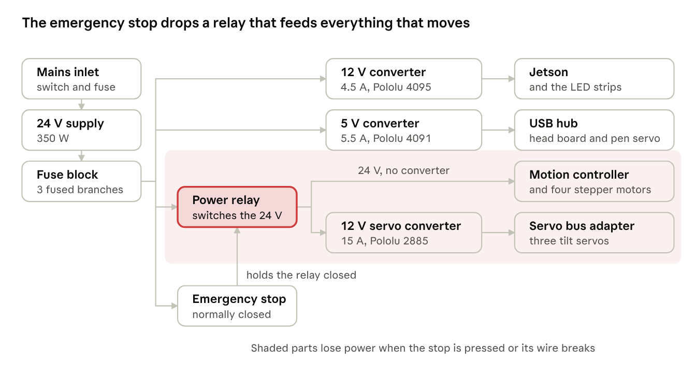

Wiring and Software
What plugs into what, and which piece of software talks over each cable.
This is the map of what plugs into what in the UltraVena rig, and which piece of software talks over each cable. It matches CAD model version 7 (the redesign that followed the team's design review) and the current parts list.
At a glance

The Jetson is the only thing that makes decisions. It reaches the motion controller for the gantry, the servo adapter for the three tilt servos, the Teensy for the safety sensors and the two webcams through one USB hub, and it talks to the iPad over its own Wi-Fi network with no cable between them. The iPad is the screen the user touches and, on the Butterfly build, also the place the probe plugs in, so the ultrasound frames reach the Jetson over that same wireless link (the Vscan build still films the Vscan's own screen with a small camera wired to the Jetson). The Teensy is highlighted because it is the one part that has to keep working even when the Jetson is busy or has crashed, and it now has a helper, a small sensor board on the moving head that gathers everything the head measures and sends it down a single serial lead.
Power wiring

One 24 V supply feeds a fuse block with three branches. Two of them are always on (the computer side), and the third passes through a relay that the emergency stop holds closed, so everything that can move loses power the moment the button is pressed or its wire breaks.
| Branch from the fuse block | Wire | Feeds | Peak draw at 24 V (estimate) | Fuse to fit |
|---|---|---|---|---|
| Computer 12 V | 18 gauge to the Pololu 4095 | Jetson barrel jack, then the LED strips (back strip first, jumpered to the left, right and front strips) | 1.6 A, about 35 W | 3 A |
| Logic 5 V | 18 gauge to the Pololu 4091 | USB hub power, and a lead through the cable chain to the head sensor board, which passes 5 V on to the marker servo | 0.5 A, about 10 W | 2 A |
| Motion, through the relay | 18 gauge to the relay contact beside the fuse block, then on to a small junction on the back wall | Motion controller at 24 V (about 60 W) and the 12 V servo converter (about 97 W with all three servos stalled) | 6.5 A, about 157 W | 10 A |
| Relay coil, through the emergency stop | A light pair from the motion branch up to the stop button on the front panel and back to the relay | Only the relay's coil | Under 0.1 A | Shares the motion fuse |
The three add up to about 200 W at the loads, or roughly 230 W from the supply once converter losses are counted, against a 350 W rating. The stop button itself now carries only the relay's coil current, so it never has to switch the motor load.
Everything else takes its power from one of those. The Teensy, the servo bus adapter's logic, the motion controller's logic and both webcams are powered through their USB cables. The six pressure pads and the lift switch run from the Teensy's 3.3 V pin. On the head, the sensor board takes the 5 V lead, feeds the marker servo from it directly, and supplies 3.3 V to the load cell amplifier, the tilt sensor and the four distance sensors. The three tilt servos take 12 V down the same chained cable that carries their data. The iPad runs on its own battery and is lifted out of its slot to charge, so it draws nothing from the rig, and the Butterfly probe has its own battery too.
Data and signal wiring
Every link that carries information, grouped by the controller it lands on, with the one wireless link first. The Butterfly and Vscan builds differ only in the last three rows.
| From | To | Cable | What travels on it |
|---|---|---|---|
| Jetson wireless module | iPad | None. The Jetson hosts a small private Wi-Fi network and the iPad joins it | The camera view, progress and alarms out to the iPad, taps back from it |
| Jetson USB port | USB hub | USB 3 | Everything below that goes through the hub |
| USB hub | Overhead webcam (top left) | USB | Colour frames looking down on the arm and the probe head |
| USB hub | Side webcam (front right, low) | USB | Colour frames looking across the arm |
| USB hub | Motion controller | USB | Move commands out, position and status back |
| USB hub | Servo bus adapter | USB | Target angles out, true angle, load and temperature back |
| USB hub | Teensy | USB | Sensor readings and alarms in, marker and threshold commands out |
| Motion controller, X driver | X stepper motor | 4-wire motor lead through the cable chain | Motor current |
| Motion controller, Y driver | Left Y stepper motor | 4-wire motor lead along the base | Motor current |
| Motion controller, spare (extruder) driver | Right Y stepper motor | 4-wire motor lead along the base | Motor current, mirrored from the left Y motor in firmware |
| Motion controller, Z driver | Z stepper motor | 4-wire motor lead through the cable chain | Motor current |
| Motion controller, X, Y and Z switch inputs | Three home switches | 2-wire leads | Closed or open, read once at startup to find zero |
| Servo bus adapter | Yaw servo, then pitch, then roll | One 3-wire servo cable chained from servo to servo | 12 V, ground and a single two-way data line |
| Teensy | Head sensor board on the Z slide | 3-wire serial lead through the cable chain, with the 5 V pair from the converter beside it | Head readings up to the Teensy, marker commands down |
| Head sensor board | Load cell amplifier beside it | 4 short wires | 3.3 V, ground, clock and data |
| Load cell amplifier | Load cell | The load cell's own 4 fine wires, a few centimetres | The raw force signal |
| Head sensor board | Tilt sensor on the probe holder, then the four distance sensors around the probe face | One 4-wire sensor bus chained from board to board, plus an enable wire to three of the distance sensors | 3.3 V, ground and a shared two-wire data bus |
| Head sensor board | Marker servo | 3-wire servo lead | 5 V, ground and a pulse that sets pen up or pen down |
| Teensy | Lift switch on the floating head | 2-wire lead through the cable chain | Closed normally, opens when the head starts to float |
| Teensy | Six pressure pads under the arm, in two columns of three | Six 2-wire leads along the base | A voltage that rises as the arm presses down |
| Butterfly probe | iPad | The probe's own USB-C cable, through the hole in the slanted panel | The ultrasound data, into the team's app through the Butterfly SDK |
| iPad (Butterfly build) | Jetson | The Wi-Fi link in the first row | Live ultrasound frames, each stamped with the time it was captured |
| Vscan probe, then display unit camera (Vscan build) | Jetson camera connector | The probe's own cable to the display unit, then a ribbon cable from the camera in the light box | A video of the Vscan's screen |
The hub ends up with five of its seven ports used. Eight separate leads run through the cable chain to the moving parts (two motor leads, the X and Z home switches, the servo cable, the serial lead and the 5 V lead to the head sensor board, and the lift switch), plus the probe's own cable which hangs free. That is one fewer than before even though the head carries more sensors, because the sensor board turns four separate sensor leads into one.
Teensy pin plan
This is a proposed assignment, chosen so that nothing shares a pin and plenty stay free. The Teensy is a 3.3 V board and none of its pins tolerate 5 V, so everything wired to it directly runs from its 3.3 V pin, and the head sensor board (also a 3.3 V board) talks to it at the same level.
| Teensy pin | Connects to | Direction | Notes |
|---|---|---|---|
| USB | Hub | Both | Power and the link to the Jetson |
| 3.3 V and ground | Pressure pads and lift switch | Out | A few milliamps, far inside the pin's 250 mA |
| 0 and 1 (serial 1) | Head sensor board | Both | Force, tilt and distance readings in, marker commands out |
| 4 | Lift switch | In, with the internal pull-up | Wired so a broken wire reads the same as a lifted head |
| 6 | Stop line to the relay coil circuit | Out | Not in the CAD yet, see Safety wiring |
| 14 to 19 (analog 0 to 5) | Pressure pads 1 to 6 | In | Each pad sits between 3.3 V and its pin, with a 10 kΩ resistor from the pin to ground |
| 2, 3, 5, 7 and 20 to 23 | Spare | Eight pins for later, four of them analog-capable |
Head sensor board pin plan
The head sensor board is new in this version. It rides on the Z slide next to the load cell amplifier, so the only things that cross the cable chain for all of the head's sensing are one serial lead and one 5 V lead. The plan below assumes a board the size of an Adafruit QT Py, which offers eleven usable pins, and it uses every one of them.
| Board pins | Connects to | Notes |
|---|---|---|
| 5 V in and ground | The 5 V lead from the converter | Passed straight on to the marker servo |
| 3.3 V out | Load cell amplifier, tilt sensor, four distance sensors | Roughly 120 mA in total |
| Serial transmit and receive (2 pins) | Teensy pins 0 and 1 | The only data link off the head |
| Sensor bus data and clock (2 pins) | Tilt sensor and all four distance sensors | One shared bus chained from board to board |
| Three enable outputs (3 pins) | Distance sensors 2, 3 and 4 | All four sensors wake up with the same address, so the board holds three of them off at startup and gives each a new address in turn. Sensor 1 keeps the default, which is how four sensors fit on three pins |
| Amplifier data and clock (2 pins) | Load cell amplifier | |
| Servo output (1 pin) | Marker servo signal | A servo-style pulse, 1 to 2 ms |
| Reset output (1 pin) | Tilt sensor reset | Lets the board restart the sensor if it stops answering |
Safety wiring
There are three layers, and they are deliberately independent of each other.
- The floating head. No wire at all. The head lifts on its rods if the probe is pushed up, so it can never press harder than its own weight (about 7 N by estimate).
- The emergency stop. A hardware cut. The button is a normally-closed, twist-to-release type wired in series with the coil of a power relay, and the relay's contact carries the 24 V feed to the motion controller and the servo converter. Pressing the button, or any break in its wiring, lets the relay drop out, so the motors and servos go limp at once. The Jetson, Teensy, webcams and iPad stay on, which lets the screen explain what happened. The small marker servo also stays powered on the 5 V side, which is deliberate, since it can then lift the pen clear when a stop happens.
- The Teensy's watch loop. Software, but on its own processor. A thousand times a second it checks the lift switch and the six pressure pads, and it checks the force on the probe and the four distances to the skin as fast as the head sensor board delivers them (the load cell amplifier tops out at 80 readings a second). It raises an alarm if any of them crosses its limit. The pads are read as a pattern across all six, and the Teensy subtracts the push it expects from the probe itself before deciding that the arm has moved.
The weak point is still what happens after the Teensy raises that alarm. As modelled, the alarm travels over USB to the Jetson, and the Jetson then tells the motion controller and servos to stop, so a frozen Jetson would mean a missed stop. The relay makes the fix simpler than it used to be. One small transistor in the relay's coil circuit, switched from Teensy pin 6, lets the Teensy drop the same relay the stop button does and cut motor power by itself (the Teensy has to hold the line high to keep the relay in, so a crashed Teensy stops the rig as well). It costs almost nothing and should be added before the first test on a person.
Software
Five processors run code now that the iPad and the head sensor board are part of the system, and each owns a different job. None of this is written yet, so the languages and libraries below are the proposed starting point.
| Runs on | Program | What it owns | How fast | Proposed tools |
|---|---|---|---|---|
| iPad | UltraVena app | Start, stop, picking the start site on the camera view, progress, alarms. On the Butterfly build it also runs the probe through the Butterfly SDK and forwards every frame to the Jetson | Redraws with the screen, forwards frames as they arrive | Swift in Xcode, the Butterfly imaging SDK for iOS, a WebSocket to the Jetson |
| Jetson | App server | Hosts the Wi-Fi network and the connection the iPad joins, sends the camera view and scan state, receives taps and ultrasound frames | Continuous | Python with a WebSocket library |
| Jetson | Arm tracker | Reads both webcams, finds the printed markers on the arm and the one on the probe head, works out where each of them is, and reports whether the arm has shifted (a slow drift is followed, a quick move pauses the scan) | About 30 frames a second | Python, OpenCV marker detection |
| Jetson | Ultrasound reader | Takes the live frames arriving from the iPad (or grabs the Vscan screen from the camera) and lines each one up with the pose it was taken at | As fast as frames arrive | Python |
| Jetson | Vessel model | Outlines the vessel in each frame and measures its depth and width | Target of 10 frames a second or better | The team's U-Net, run with the Jetson's graphics acceleration |
| Jetson | Scan planner | Decides the next pose of all six axes from the tracked arm position, the four distance readings and the last image, and picks the cannulation point at the end | Once per scan step | Python |
| Jetson | Motion coordinator | Sends each pose to the gantry and the servos together, waits until both report arrived, then uses the four distance readings to square the probe to the skin | Once per scan step | Python, serial link to the controller, Feetech servo library |
| Motion controller | Stepper firmware | Turns each move command into smooth, timed steps on four motors, and homes the axes | Thousands of steps a second | Open printer firmware (Marlin or Klipper), with the second Y motor set to mirror the first |
| Teensy | Safety firmware | Reads the lift switch and the pads, takes in the head's readings, compares everything to limits, raises alarms, and passes marker commands on to the head | 1,000 checks a second | C++ in the Arduino environment |
| Head sensor board | Head firmware | Reads the load cell, the tilt sensor and the four distance sensors, sends them to the Teensy as one packet, and moves the marker servo when told | Up to 80 packets a second | C++ in the Arduino environment |
The six axes stay in step by moving in short hops and never trying to glide. For each scan step the coordinator sends the gantry its X, Y and Z target and the servos their three angles at the same moment, waits for the controller to report the move finished and for the servos to report their true angles, reads the four distance sensors (with the tilt sensor as a cross-check), nudges pitch and roll until the probe sits square to the skin, and only then lets the ultrasound reader take the frame. That removes any need for the two motion systems to share a clock. The Butterfly frames now arrive over Wi-Fi with a small delay, so the iPad stamps each one with the time it was captured and the reader matches frames to poses by that stamp, never by when they happened to arrive.
Messages between the controllers
Each link carries a small, fixed set of messages. Keeping the set this small is what lets each program be written and tested alone.
| Link | The Jetson sends | It gets back |
|---|---|---|
| Jetson to motion controller | Home all axes. Move to X, Y, Z at a given speed. Stop now. | Current position, move finished, home switch states, errors |
| Jetson to servo bus adapter | Go to yaw, pitch and roll angles at a given speed. Go limp. | True angle, load, temperature and voltage for each servo |
| Jetson to Teensy | Set the force, lift, distance and pad limits. Arm or disarm the watch loop. Lower the marker, then raise it. | Force on the probe, lift switch state, tilt angles, four distances to the skin, six pad readings, and an alarm naming whichever limit was crossed |
| Teensy to head sensor board (the Teensy sends) | Marker up or down. Zero the load cell. | One packet holding the force, the tilt angles and the four distances |
| Webcams to Jetson | Nothing beyond settings at startup | Colour frames |
| Jetson to iPad | What to show, meaning the camera view, progress, the vessel outline and any alarm | Taps, the chosen start point, Start and Stop |
| iPad to Jetson (Butterfly build) | Imaging mode and depth settings, which the app passes on to the SDK | Live frames with their capture times, and colour Doppler frames when that mode is on |
The Teensy also sends a short heartbeat ten times a second. If the Jetson stops hearing it, the Jetson stops the scan, and if the Teensy stops hearing the Jetson, it treats that as an alarm. The iPad link gets the same treatment, so a dropped Wi-Fi connection pauses the scan and the rig never keeps moving without a working Stop button on the screen (the red emergency stop works either way).
One scan, step by step
- Power on. The motion controller homes X, Y and Z against their switches, the servos report their angles, the head sensor board zeroes the load cell with the probe hanging free, and the Jetson brings up its Wi-Fi network so the iPad app can connect.
- Arm in. The user rests the forearm in the cradle and takes hold of the hand grip. The arm tracker finds the printed markers in both webcam views and works out where the forearm lies, and the iPad shows the overhead camera view.
- Pick a start. The user taps a spot. The app sends the tap to the Jetson, which turns it into a point on the arm and hands it to the scan planner.
- Arm the watch loop. The Jetson tells the Teensy to start checking limits, and the pad readings at this moment become the baseline for "the arm has not moved".
- Touch down. The coordinator moves the probe above the start point and lowers Z in small steps. The four distance sensors show how far each side of the head is from the skin, so the servos tilt the probe square before it lands, and the load cell tells the Teensy when it has made light contact.
- Scan. For each step along the arm the coordinator moves all six axes, waits, squares the probe using the distance sensors, and the ultrasound reader takes the frame for that moment. The vessel model outlines the vessel and the planner uses that outline to keep the next step centred on it. All the while the webcams keep watching the arm markers, so a slow drift shifts the plan to follow the arm and a quick move pauses the scan.
- Choose the point. The planner scores every step by vessel depth, width and straightness and picks the best one.
- Mark it. The coordinator lifts the probe, shifts the gantry by the marker offset (48.5 mm on the Butterfly build, 44 mm on the Vscan), and lowers the head until the pen tip is just above the skin. The Jetson then asks the Teensy to mark, and the head sensor board swings the marker servo to dip the pen and lift it again.
- Finish. The head returns to its parked position, the Teensy disarms, and the iPad shows the result.
At any point from step 4 onward, a Teensy alarm, a lost heartbeat, a dropped iPad link, a tracker report that the arm moved quickly, or a tap on Stop ends the scan, lifts the probe and parks the head. The emergency stop works regardless of all of it.
Still to confirm before wiring
- Teensy stop line. Add the transistor in the relay's coil circuit, switched from Teensy pin 6, and decide whether the motion controller's pause input should be wired as well.
- Emergency stop and relay. Choose the normally-closed, twist-release button and a relay with a 24 V coil whose contact is rated for at least 10 A on DC (the motion branch peaks near 6.5 A), and fit a diode across the coil.
- Donor controller. Confirm the Ender-3 V3 SE board can be reflashed and can run its extruder driver as a second Y motor.
- iPad and Butterfly SDK. Confirm the SDK supports the team's iPad mini and its iOS version (the SDK asks for iOS 18 or later), that the app can pull ordinary and colour Doppler frames, and whether biplane imaging is offered at all.
- Jetson Wi-Fi. Confirm the Jetson's wireless module can host its own network with its antennas fitted, and measure the delay from probe to Jetson end to end. The iPad will also ask the user once for permission to reach devices on the local network.
- Servo adapter over USB. Confirm the Waveshare adapter shows up as a plain serial port on the Jetson and that the servo library runs there.
- Head sensor board. Confirm eleven pins really is enough once the board is chosen, that the marker servo accepts a 3.3 V pulse while powered from 5 V, and that the tilt sensor behaves on a bus shared with the distance sensors (its simple serial mode is the fallback).
- Distance sensor fit. The real sensor boards are larger than the outline in the CAD (about 25.5 by 17.7 mm against 10 by 13 mm drawn), so the four tabs on the probe holder need redrawing around the real part, and each sensor's view of the skin has to clear the probe and the gel.
- Long serial lead. The head sensor board sits over a metre of moving cable from the Teensy, so test the serial link at full length before closing up the cable chain.
- Webcam views. Check that both webcams see the arm markers and the head marker across the whole travel, and that the LED strips do not wash the markers out.
Part numbers and prices are in the parts list, and what each part does is in the parts research brief.